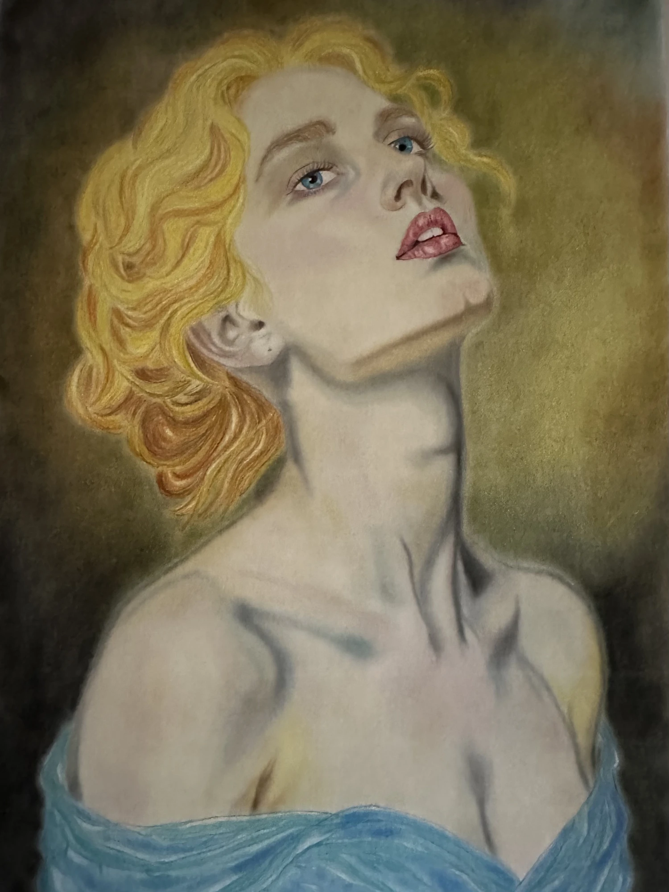
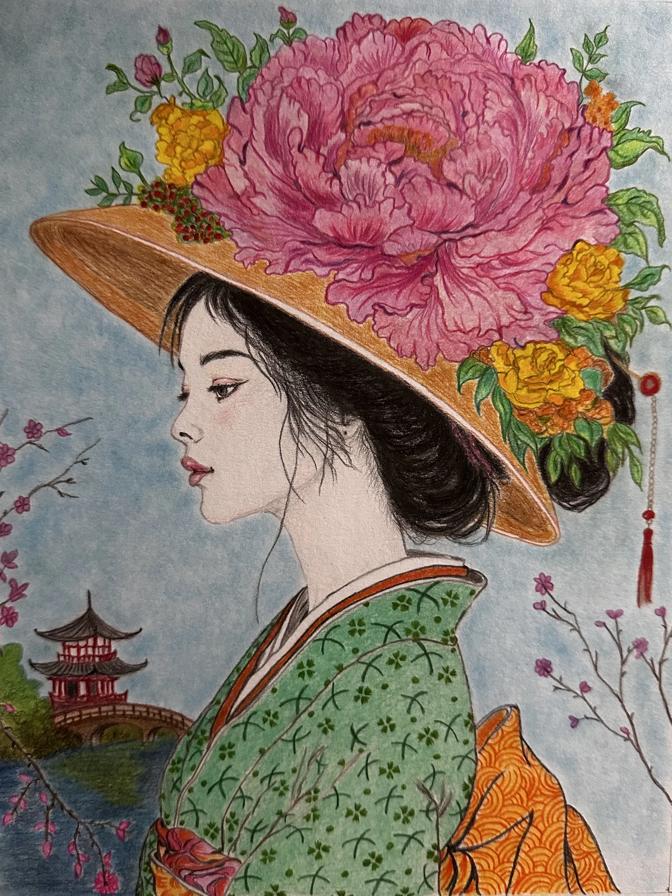
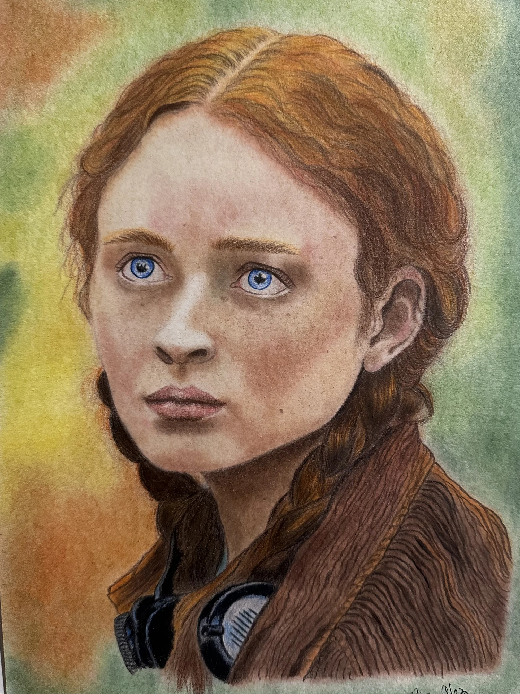
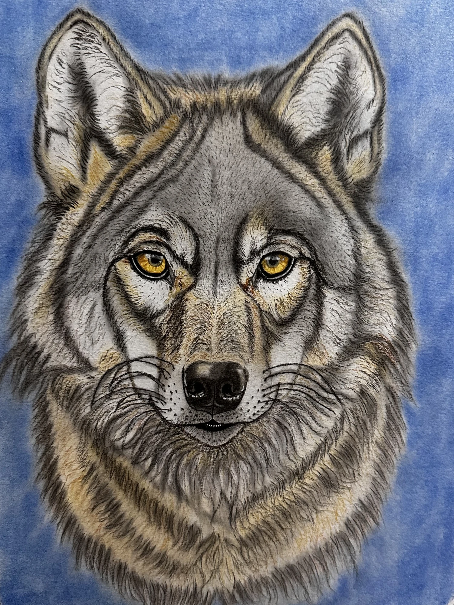
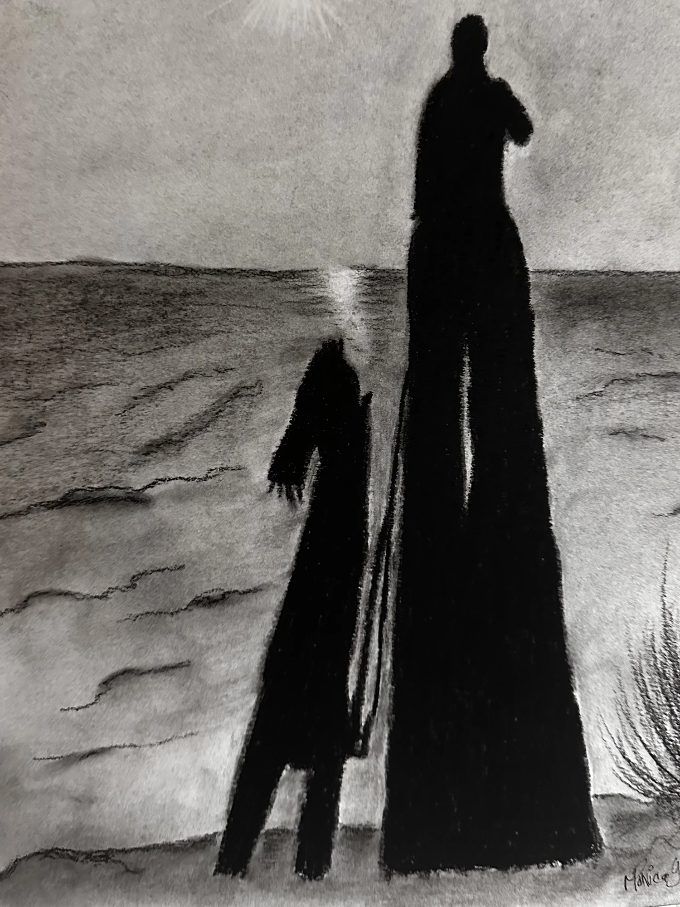

GALA GLEZ
Artista Plástica · Desenho · Pintura
Sobre Gala Glez
Nascida em Havana em 1970 e formada na Escola de Belas Artes de Havana, Gala desenvolveu uma profunda ligação com o desenho e as artes plásticas.
O desenho ocupa um lugar central na sua expressão artística, explorando a forma, a linha, a luz e a observação.
O seu trabalho percorre diferentes temas e linguagens, incluindo retrato, paisagem, natureza e pintura.
Este espaço reúne uma selecção do seu trabalho e pretende ser um lugar de encontro entre a artista e aqueles que apreciam o desenho e a criação artística.
Galeria





Obras
Em breve poderá explorar uma selecção das obras de Gala, organizadas por técnica e tema.
Loja
Esta área está a ser preparada para futuras disponibilizações de obras, reproduções e outros projectos relacionados com o trabalho da artista.
Contacto
Para informações sobre as obras de Gala, entre em contacto com a artista.